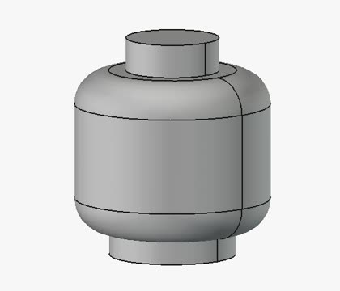

Проєкт LEGO-чоловічок. Етап 1: Голова

Це перший етап проєкту: моделюємо LEGO-чоловічка частинами, і почнемо з голови.
Що навчимося: створювати параметричне тіло, малювати ескізи на гранях, видавлювати (Pad), вирізати (Pocket) і заокруглювати ребра (Fillet).
Відео
Кроки
Усі кола будуємо з центром у точці початку координат.
1. Тіло. У Part Design створіть  параметричне тіло (Body).
параметричне тіло (Body).
2. Шия. Натисніть  Новий ескіз і виберіть площину XY. Побудуйте коло діаметром 6,5 мм і закрийте ескіз. Інструментом
Новий ескіз і виберіть площину XY. Побудуйте коло діаметром 6,5 мм і закрийте ескіз. Інструментом  Видавлювання (Pad) видавіть коло на 1,2 мм.
Видавлювання (Pad) видавіть коло на 1,2 мм.
3. Голова. Виділіть верхню грань циліндра, що вийшов, і створіть на ній новий ескіз. Побудуйте коло діаметром 10,1 мм і закрийте ескіз. Видавіть його на 8,4 мм.
4. Шип. Виділіть верхню грань голови і створіть новий ескіз. Побудуйте коло діаметром 4,8 мм і закрийте ескіз. Видавіть його на 1,7 мм.
5. Отвір знизу. Поверніть модель на 180°, щоб побачити низ. Виділіть нижню грань і створіть новий ескіз з колом діаметром 4,8 мм. Закрийте ескіз і зробіть  Виріз (Pocket) глибиною 6 мм.
Виріз (Pocket) глибиною 6 мм.
6. Заокруглення. Виділіть верхнє і нижнє ребро великого циліндра (голови) і застосуйте Заокруглення (Fillet) з радіусом 1,75 мм.
7. Збереження. Виберіть Файл → Зберегти як…
8. Здача. 📤 Надішліть файл з роботою в Google Classroom.
Завдання. Змоделюйте голову LEGO-чоловічка і збережіть файл з назвою
Lego Голова Прізвище Клас.FCStd
Наприклад: Lego Голова Петренко 10-А.FCStd
📤 Надішліть файл з роботою в Google Classroom.